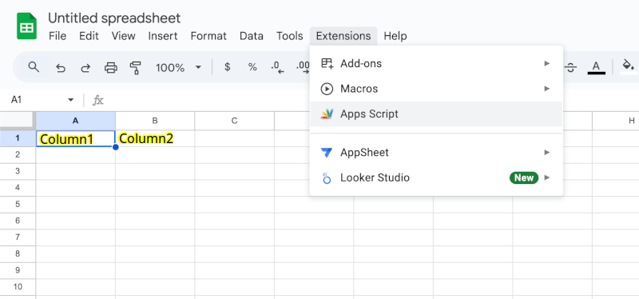
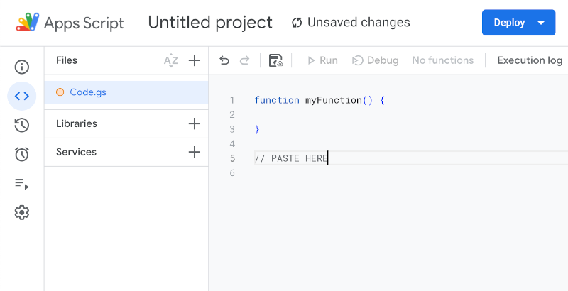
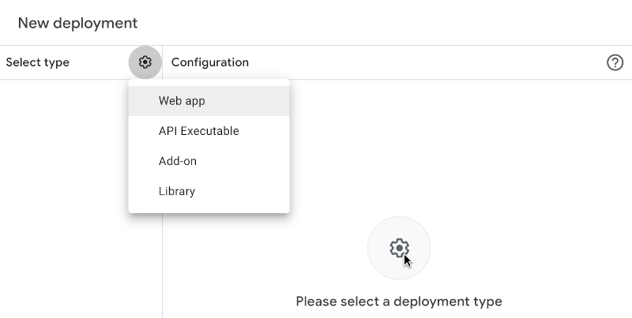
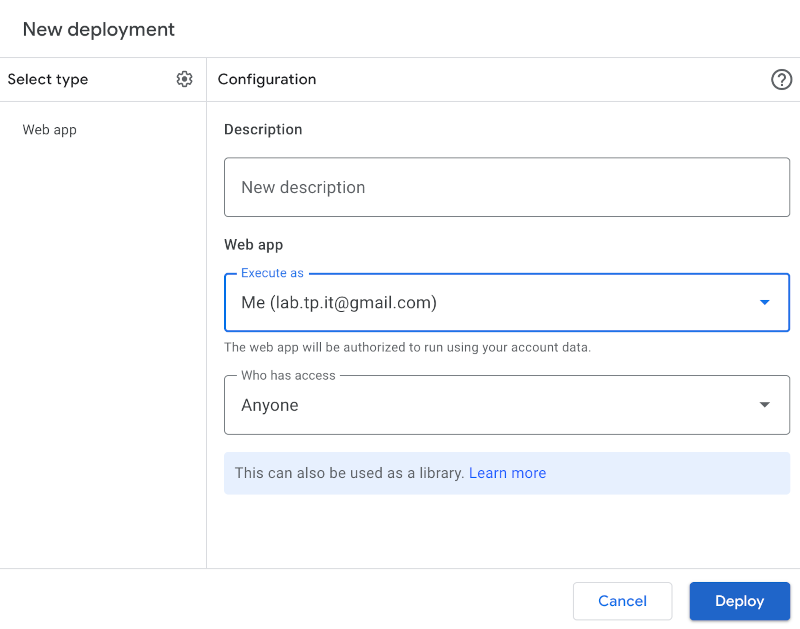
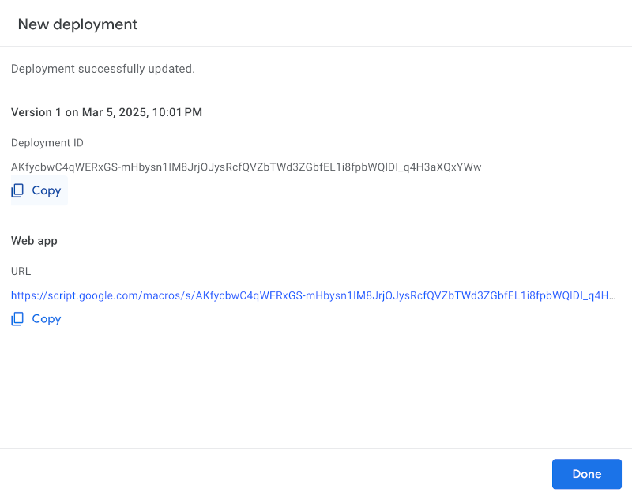

01
Create Google Sheet
Open Google Sheets and create a new spreadsheet. Define clear headers for your data columns.
02
Add Apps Script
Navigate to Extensions > Apps Script. Open editor and paste the provided API file script you found here.
03
Deploy Web App
Deploy the script as a web app and obtain your unique API endpoint.
Remember copy your Deployment ID it is your Secret for CURL requests



Apps Script: Code.gs (paste me on google)
CURL Examples
INSERT DATA
curl -H 'Secret:DEPLOYMENT_ID' https://data.yafb.net/api/insert -d '{"name": "John", "email": "john@example.com"}'
READ DATA
curl -H 'Secret:DEPLOYMENT_ID' https://data.yafb.net/api/listTry It Online
Explore our API instantly with Swagger UI. No hidden costs, no paid tiers — AlterLoop is completely free and open-source. Just your data and our API in action. Contribute, modify, and use as you wish under the MIT License.
Open Swagger UI